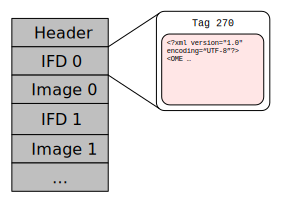
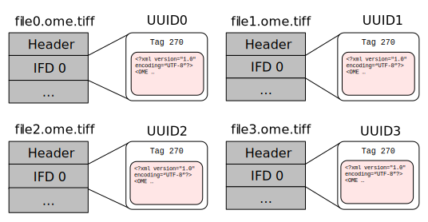

OME file formats
Users meeting
June 1, 2016
Sébastien Besson
OME File Formats
- OME File Formats implementing the OME Data Model
- OME-XML
- OME-TIFF
- Increasing adoption within the community
- 2015-2016: Feedback from open-source projects
- Extensive review of the OME Formats samples and documentation
OME-TIFF file format
- Based on the TIFF specification
- OME metadata stored as OME-XML within the ImageDescription tag of the first IFD

OME-TIFF file format

See artifical OME-TIFF samplesOME-TIFF large datasets
- TIFF specification limited to 4GB (32-bit pointers)
- Limitations for large data volumes
- Complex multi-dimensional datasets
- High-Content-Screening data
Solution 1: BigTiff
- OME-TIFF supports BigTIFF format
- Use of 64-bit based offsets overcomes 4GB limit
Solution 2: distribution across multiple files
See the multi-file OME-TIFF sample Solution 2: distribution across multiple files
See the master OME-TIFF sample
Solution 2: distribution across multiple files
See the companion OME-XML sample
Extended metadata
- Store flexible metadata not defined in the OME Data Model
- Use structured annotations to store key/value pairs
<OME xmlns="http://www.openmicroscopy.org/Schemas/OME/2015-01"
...
<AnnotationRef ID="Annotation:1"/>
</Image>
<MapAnnotation ID="Annotation:1">
<Description>Additional metadata description</Description>
<Value>
<M K="Key-1">Value-1</M>
<M K="Key-2">Value-2</M>
</Value>
</MapAnnotation>
</StructuredAnnotations>
</OME>
See the OME-XML sample
Tools and software
- Bio-Formats tools
- validation (xmlvalid)
- reading (showinf)
- modification (tiffcomment)
- Reference C++ implementation for working with OME Files
Future directions
- More extension points
- New HDF5-based file format
Questions?
Model Changes
Class Hierarchies
- LightSource Arc, Filament, GenericExcitationSource, Laser, LightEmittingDiode
- Shape Ellipse, Label, Line, Mask, Point, Polygon, Polyline, Rectangle
Model Changes
Single namespace
- No more Schemas/SA/2015-01,
Schemas/SPW/2015-01, etc. - For 2016 all now in one OME namespace
Model Changes
Drop ROI Properties
Drop from model,
- ROI.Namespace
- Shape.LineCap
- Shape.Visible
Model Changes
Drop (Poly)Line Markers
- Drop Circle and Square
- Arrow markers remain
- Also added to OMERO model
Model Changes
New: Folders
- Folders may contain:
Folders, ROIs, Images - Folder hierarchy is a strict tree:
a Folder may have only one parent
Model Changes
Folders and Images
- Images are associated with Folders,
- directly via ImageRef or
- indirectly via ROIRef
- OMERO.insight, .web initially support only the latter
Model Changes
Folder Example
<Folder ID="Folder:1" Name="CMPO"> <FolderRef ID="Folder:2"/> <FolderRef ID="Folder:7"/> </Folder> <Folder ID="Folder:7" Name="Cell Component"> <FolderRef ID="Folder:8"/> <ROIRef ID="Roi:14"/> </Folder>